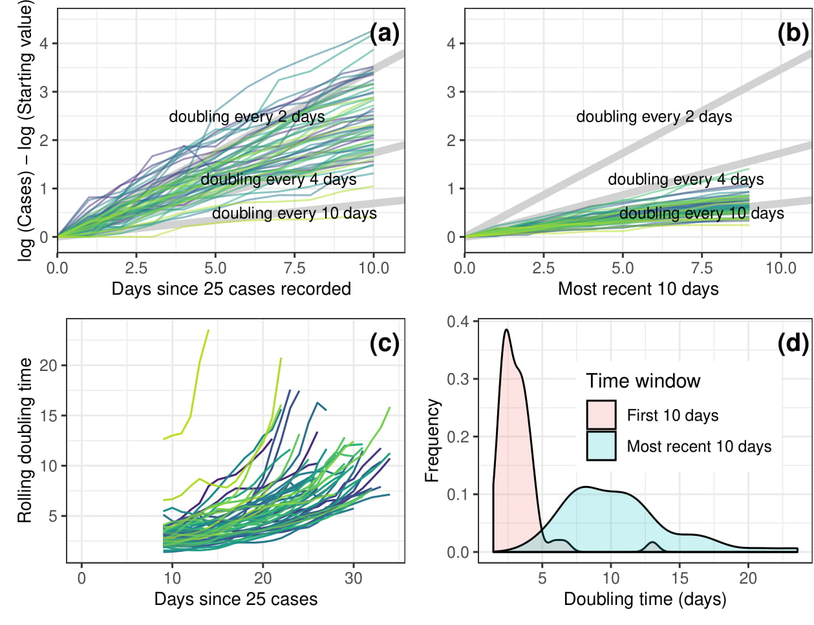

This page will track daily state-level differences in the COVID-19 dynamics for the United States. All the data used here comes from John Hopkins University and the CDC . We are now trying to determine what is causing the differing state-level trajectories. Please let me know if you are interested in contributing to this project. A preprint and R code are available at https://github.com/eastonwhite/COVID19_US_States.
Fig 1: (left panel) Total number of COVID-19 cases for the US over time. (right panel) Total log number of COVID-19 cases for the US over time. The red, dashed line indicates the best fit curve. A straight line on a log graph indicates exponential growth. Therefore, the US started seeing exponential growth in cases after March 1st.

Fig 2: log(Number of cases) since day of at least 25 cases for various US states. Subtracting initial case number of the y-axis was neccessary to standardize the states.Fig 2: Doubling time (in days) for various US states with at least 25 cases.